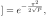
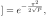

Next: July – Animating GIFs Up: Blog posts 2021 Previous: May – Rayleigh fading Contents
Multiple-input and multiple-output (MIMO) antenna technology is used to exploit the multi-path propagation to improve the capacity of a communication link (i.e. more gigabytes of internet speed). In principle, capacity of the link can be increased merely by increasing the power of the transmitting antenna. However – apart from being energy-consuming – this increases also interference to any other receivers should they transmit in the same frequency band. In MIMO the energy is divided among multiple antennas, and the link capacity is improved without using any extra energy and without increasing the interference to other transmitters.
But what is the secret? Here is how I came up with a simple argument based on stochastic geometry. Let us make some assumptions. We assume a flat and infinite Earth (yeah – you can laugh at this “tin foil assumption”, but it is often reasonable). In addition, we assume that our communication channel environment consists of many obstacles so that our transmitting antenna and receiving antenna can not see each other. We can assume that we are in a city full of houses, cars, trees, etc. Then our data signal is prone to propagate to the receiver through multiple paths; for example through distinct streets around different houses. The aggregate signal in the receiver will be Rayleigh faded. The city is full of mobile phones exchanging data with their base stations which are further handing the data to the receiving mobile phones base station and, on the other hand, causing interference to the other base stations. We make a natural assumption that the interfering base stations are distributed according to the Poisson point process around the receiver.
Let's consider that person A is sending a message (a Telegram message, or whatever you wish) to person B. We are interested in the probability that the base station serving person A will successfully transmit the message to a base station serving person B. Under assumptions above and some other simplified assumptions – as derived here, we can express the probability of a successful transmission as:
 Successful single-antenna transmission Successful single-antenna transmission |
(1) |
where  denotes the mean transmitting power of the base-stations.
denotes the mean transmitting power of the base-stations.
In MIMO we use multiple distinct antennas to transmit the same message. In each antenna, encoding of the message should be different so that it can't mix with the information that the other antennas are transmitting. This is possible by orthogonal modulation.
Assuming that each message from each antenna will propagate to the receiver in an independent way, we can calculate from equation  by complementary probability that at least one message transmission gets through:
by complementary probability that at least one message transmission gets through:
Successful MIMO transmission with N antennas![$\displaystyle ] = 1-\left(1-e^{-\frac{\pi^2}{2\sqrt{P/N}}}\right)^N,$](img11.svg) |
where  is the number of transmitting antennas. Notice that we divided the transmitting power by the number of antennas, so we don't increase the aggregate power at all.
In the other hand, should we have no MIMO technology at hand, we could try to improve to increase the link quality just by increasing the power of a single antenna. In the following figure we compare these two cases.
is the number of transmitting antennas. Notice that we divided the transmitting power by the number of antennas, so we don't increase the aggregate power at all.
In the other hand, should we have no MIMO technology at hand, we could try to improve to increase the link quality just by increasing the power of a single antenna. In the following figure we compare these two cases.
It is evident that MIMO is a great solution for increasing the throughput of a wireless communication link. Using multiple antennas we can save power and achieve better data-rates than by merely increasing the power of a single transmitter.
References: